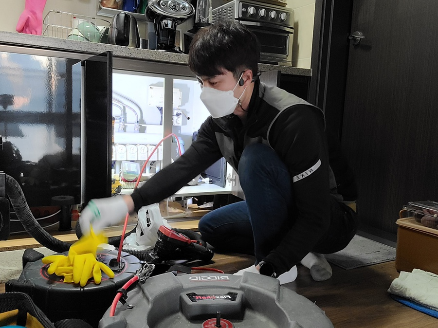
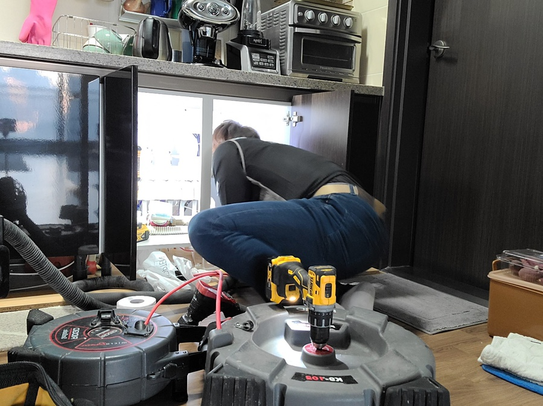
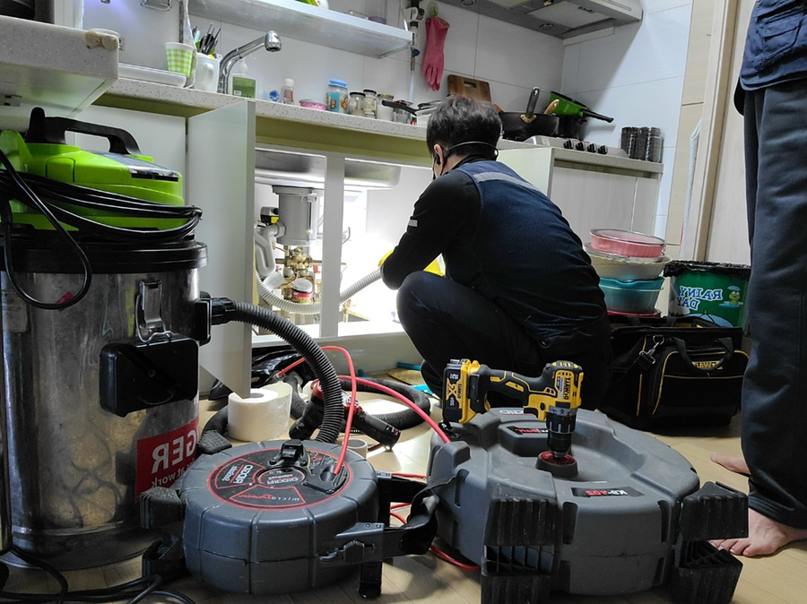
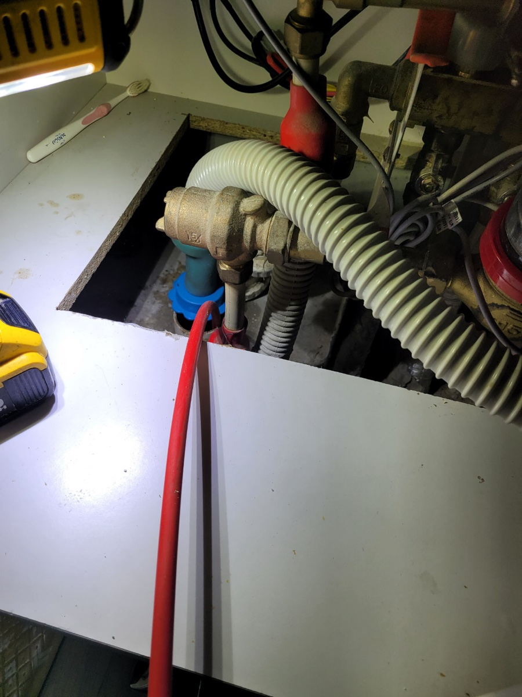
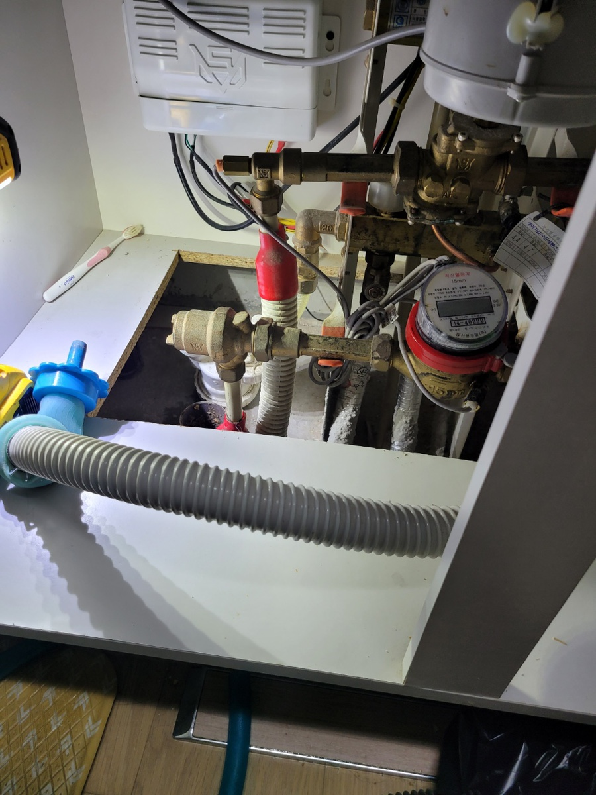

🏠 영통구 하수구막힘은 하수구막힘에서
수원 싱크대막힘 전문 시공 후기

📋 작업 개요
- 위치: 수원
- 서비스 유형: 싱크대막힘, 하수구막힘, 배관막힘, 누수수리, 뚫는업체
- 작업 일시: 2022. 1. 18. 22:35
- 업체명: 하수구수사대 (010-5615-2118)
🔍 문제 상황
영통구 하수구막힘은 영통구하수구막힘에서
안녕하세요
"하수구 수사대" 입니다
눈에 띄게 추워진 날씨 덕분에 언제나
감기 조심하셔야 겠습니다
매일같이 사용하는 하수구가 막힌다면 정말
불편할 수밖에 없는 상황일 텐데요
이럴때 빠른 해결을 위해 셀프로 해결에 도전하시는
분들이 많습니다 , 하지만 그게 과연 옳은 방법일까요?
여기서 알아두셔야 할 점이 하나 있습니다
일상적으로 사용하는 하수구가 막히는 일은
흔치 않은 일입니다 하지만 잘못된 사용방법과
실수로 일상적으로 사용하는 하수구가 막혔다고 해서
억지로 뚫으려 하신다면 배관이 손상 될 가능성이
매우 높습니다
만일 단순히 막혀 있다는 생각만 가지고 억지로
뚫으려다간 아파트의 경우에 밑에 집에 누수가
일어나 피해를 줄 수 있기 때문에 반드시
전문가에게 의뢰를 하시는 것을 강력 추천드립니다

🔎 원인 분석
💡 전문가 진단: 정밀 진단 장비를 사용하여 슬러지의 고착 여부를 판명하고 타격/세척 작업을 실시했습니다.
막상 의뢰를 맡기려고 해보면 하수구가 매일
막히는 것도 아닐테고 어느 업체가 가장
기술력이 뛰어나고 믿을만한지 고민이 앞설텐데요
서울/경기/인천 (수도권전지역)전지역
출장이 가능하고 주말,공휴일도 출장이 가능한 곳이
언제 어느때나 연락하기 좋기때문에
이런 모든 점이 가능한
영통구 하수구막힘 전문 업체인 '하수구막힘'으로
연락 한통만 주신다면 언제 어디서나 방문하겠습니다
하수구가 막혔을때는 하수구 내부에는
이물질들이 가득 하고 지저분 하기 때문에
상태를 볼 수 없는게 대다수 인데요
하수구를 뚫는 장비는 다양하지만 어떤 장비를
사용하여 뚫는다는게 가장 중요합니다
잘못된 장비를 사용하다간 상황을 더 심각한 쪽으로
이끌수가 있기 때문이죠
그렇기 때문에 언제나 하수구 막힘 작업을
할 때에는 기술과 경험 그리고 좋은 장비가
가장 중요하다고 할 수 있기에 , 저희

🔧 작업 과정
영통구 하수구막힘 전문업체인 '하수구막힘'은
최첨단 장비와 함께 검증된 기술력으로 언제나
고객님들을 도와드리고 있습니다
하수구 막힘 작업을 시작할 때 우선적으로
무엇이 막혀 있는지 모르기 때문에 통수 작업을
진행하게 되는데요 영통구 하수구막힘 전문업체인
'하수구막힘'의 스프링장비는 통수 작업을 할 때
유용한 장비라고 할 수 있습니다
이 스프링장비를 통하여 기름덩어리나
머리카락 등 이물질을 밀어내거나 물이 나가는
길을 내줄때 효과적인 장비라고 할 수 있죠ㅎㅎ
이 스프링장비또한 의도치 않은 일이
일어날수 있는 장비이기 때문에 영통구 하수구막힘
전문업체 '하수구막힘'은 작업을 할 때 언제나
조심해서 사용하고 있답니다 :)
하지만 스프링 장비를 넣는다고 완벽하게
해결이 되는 것이 아니라고 할 수 있는데요
스프링을 회수한 후 안에 무엇이 들어있는지
내시경 카메라를 통해 확실히 확인하여 원인을
알아내 단순 하수구 막힘인지 아닌지를
저희 영통구 하수구막힘 전문업체인 '하수구막힘'은
꼼꼼하게 내시경 검수를 통해 하고 있습니다
만일 오래전부터 쌓여있는 기름이 내시경 카메라를
통해 발견이 된다면 막힘증상이 있을수 있으니
완벽하게 제거해야 합니다
항상 꼼꼼한 작업을 통해 완벽하게 하수구 막힘을
수리해드리고 있습니다
뿐만 아니라 당일 방문이 가능하기 때문이
언제 어디서나 연락만 주신다면 급한 건도 빠르게
방문하여 최첨단 장비를 통해 완벽하게


✅ 작업 완료
수리해드리겠습니다
물론 후에 문제가 생기면 AS는 가능하나요?
라고 물을수도 있는데요 저희 하수구막힘은
수리 후 1년 AS서비스가 가능하니 걱정하지마시고
연락 주시면 감사하겠습니다
전화번호:010-2340-2118
경기도 수원시 영통구 봉영로 1612 7층 710-A19호
#하수구막힘 #하수구 #영통구 #수원시 #싱크대 #전문업체 #하수구막힘업체 #영통구하수구막힘




⚠️ 베란다 누수 및 방수 관리 방법
- ✅ 비가 많이 올 때 창틀 주변이나 아래층 천장에 얼룩이 생기는지 정기적으로 확인해 보세요.
- ✅ 우수관 주변 실리콘 마감이 들뜨거나 깨진 틈새가 있는지 손상 여부를 수시로 체크하세요.
- ✅ 베란다 바닥 타일의 줄눈(메지)이 소실되면 그 틈으로 물이 침투하여 누수가 유발됩니다.
- ✅ 누수 의심 증상 발견 시 방치하면 아래층 손실이 커지므로 즉시 전문가의 진단을 받으십시오.
💡 핵심 정리
- 확실한 장비 작업(내시경 점검 및 샤프트 스케일링)으로 원인을 뿌리 뽑습니다.
- 작업 후 1년 이내에 동일한 부위 재발 시 100% 무상 A/S 서비스를 보장합니다.
- 서울 · 경기 · 인천 전 지역에 24시간 언제든 긴급 출동할 수 있도록 항시 대기 중입니다.
❓ 자주 묻는 질문 (FAQ)
🚨 수원 싱크대막힘 문제로 고민이신가요?
정확한 원인 진단과 확실한 시공으로 재발 없는 해결을 약속드립니다.
24시간 긴급 출동 | 서울 · 경기 · 인천 전지역 | 1년 내 재발 시 무상 A/S